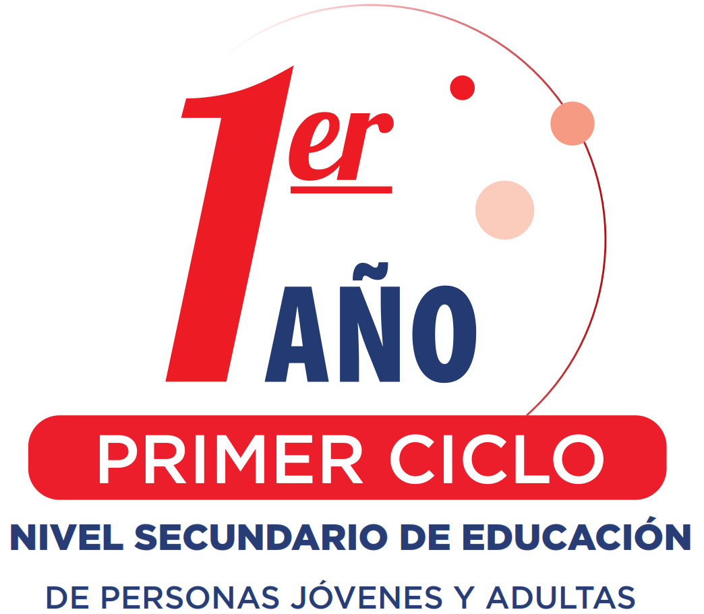
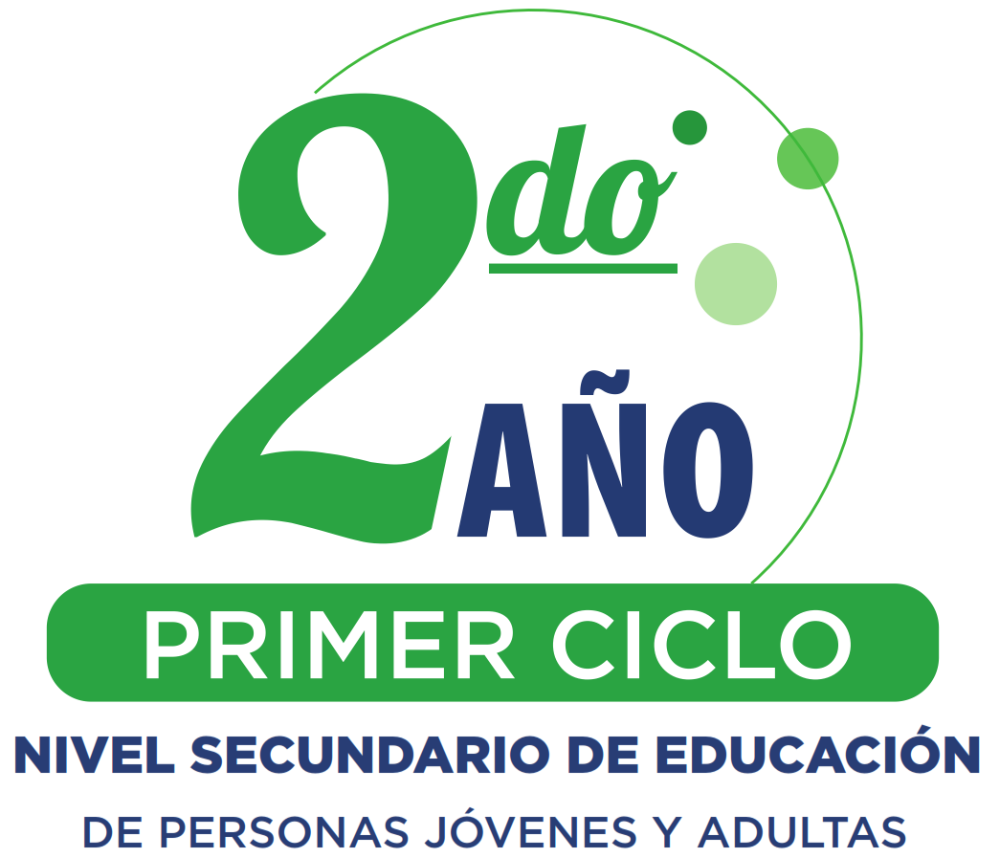
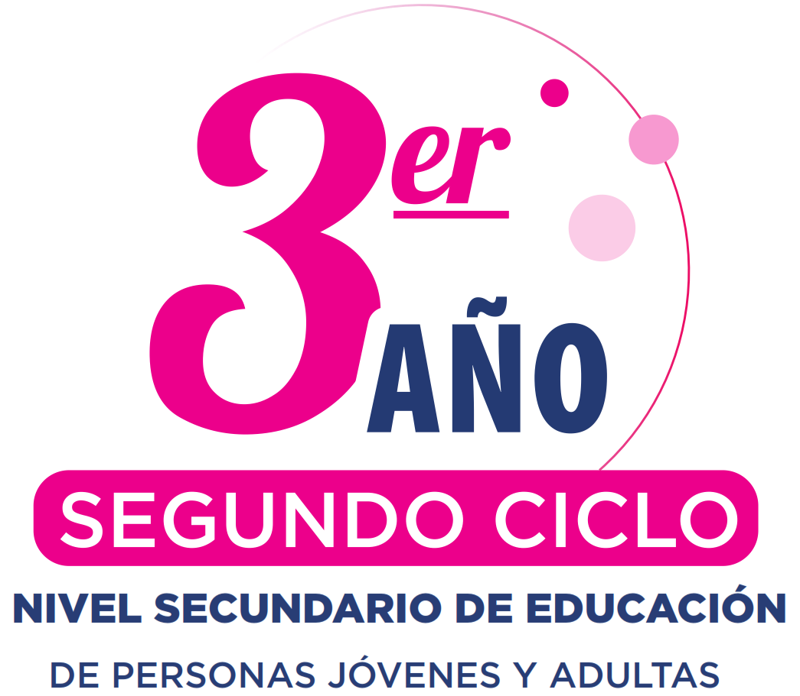
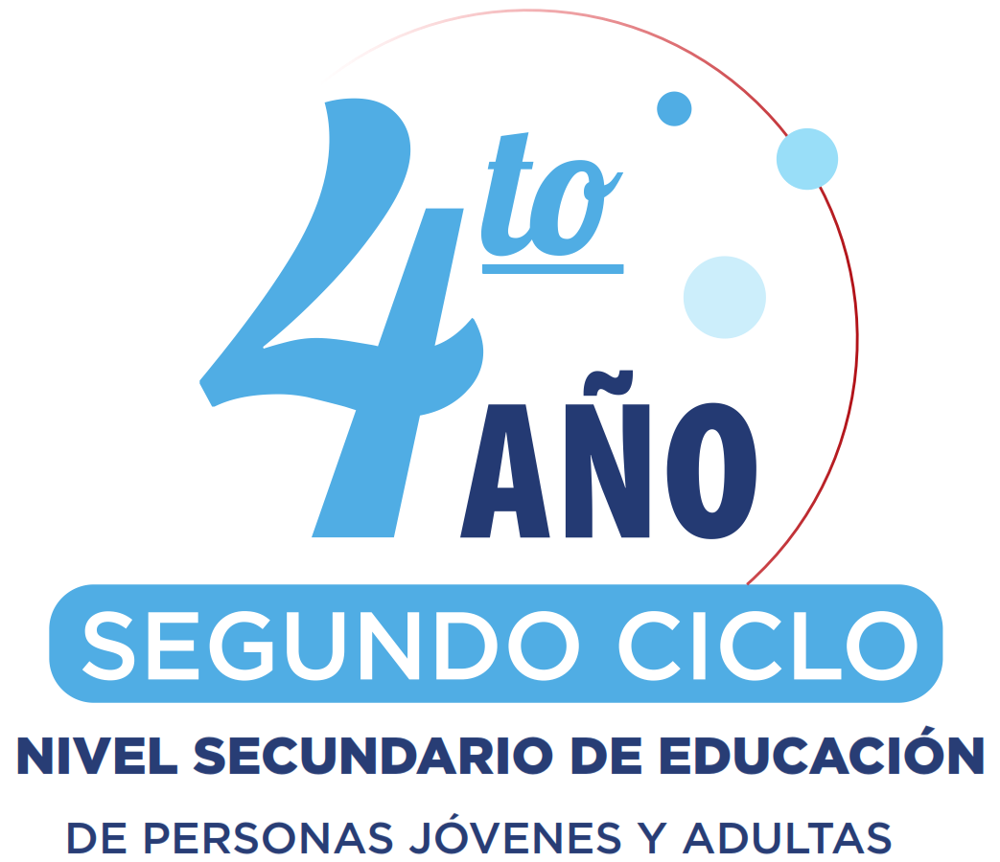
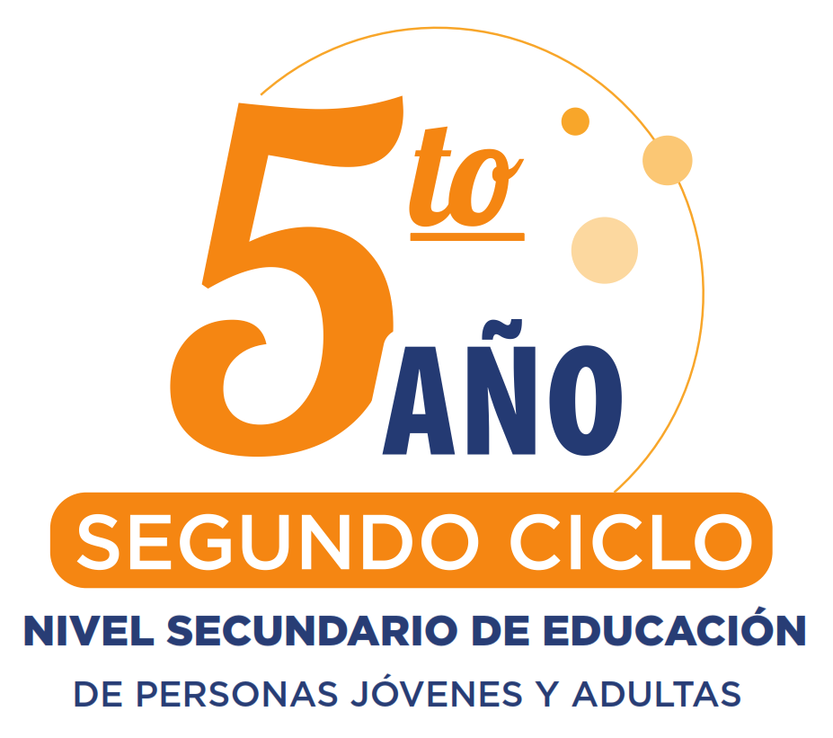

Elige tu grupo
Selecciona el año escolar, curso y sección donde estás matriculado.
Un espacio para participantes de Tercero y Cuarto del Segundo Ciclo. Identifícate en el Registro Maestro y continúa al aula que corresponde a tu curso.
Ingresar al Aula QR →Año escolar 2026–2027 · Sin códigos · Identificación inicial por nombre
Selecciona el año escolar, curso y sección donde estás matriculado.
Escribe las primeras letras y selecciona tu coincidencia en el Registro Maestro.
Continúa hacia el espacio correspondiente a tu curso para consultar sus recursos.
Prepara Canástica ofrece cinco años de Educación Secundaria para Personas Jóvenes y Adultas. Estos emblemas presentan la oferta del centro; no permiten ingresar directamente a un aula. Para entrar, utiliza «Ingresar al Aula QR» e identifícate primero.

1.º
2.º
3.º
4.º
5.ºAcceso a las aulas: únicamente después de la identificación del participante en la entrada institucional.